סולם הוודאות ומונחי המחקר — מה המילים האלה אומרות
תוכן העניינים — תשעה פרקים
צפורה קוטנר לבית בלם נולדה ב-25 בדצמבר 1931 (1932 לפי המשפחה ולפי הרישום הישראלי) בלובומל שבווהלין, השנייה מבין שבעת ילדיהם של מנדל בלם וזלדה (סוניה) לבית פרימר, חנוונים. הוריה וששת אחיה נרצחו — כמעט בוודאות ב-1942; אחיה הבכור משה היה בן 14, הקטן, חיים, בן שנה. היא שרדה; בדפי העד שמילאה ב-1999 סימנה בעצמה את המילים "ביערות" ו"במסתור".
אחרי המלחמה היא בבית הילדים בסלווינו שבהרי ברגמו באיטליה; ב-1947 היא — כמעט בוודאות — ברשימת ילדים יתומים שהועברו ממחנות המעצר בקפריסין, באותו עמוד ובאותה אונייה עם אברם קוטנר, לימים בעלה (המחקר עליו); ב-1952 שניהם בפנקס הבוחרים של קיבוץ צאלים. נפטרה בינואר 2006, ונקברה עם אברהם בבית העלמין הישן של באר שבע, תחת מצבה "לזכר הוריהם ובני משפחתם שנספו בשואה".
כל מסמך שנקרא מופיע פעמיים — קישור אל הרשומה בארכיון וקישור אל עותק שמור; גם ממצא שלילי נרשם (9.4).
מאיפה להתחיל
- המשפחה בלובומל ובדוביינקה — שלושה-עשר דפי עד שמילאה צפורה עצמה.
- המלחמה — מה שהיא סימנה, ומה שכרטיס אחד אומר אחרת.
- סלווינו, קפריסין, צאלים — הדרך לארץ.
- שנת הלידה — 1931 או 1932.
- הפעולות הפתוחות — מה עוד חסר.
1. תמצית
צפורה בלם נולדה בלובומל (Luboml, בפולנית Luboml; ביידיש ובעברית לובומל), עיירה בווהלין סמוך לנהר הבוג, ב-25.12.1931 — כך בכרטיס של שירות האיתור הבין-לאומי בארולסן, שנערך על פי רשימה של ארגון הפליטים (IRO) באיטליה, ושבו העיר "Lublin";[3] 1932 בעץ המשפחה ובפנקס הבוחרים של 1952.[7][5] אביה מנדל בלם, יליד דוביינקה שעל הבוג, בן זכריה וחיה, "סוחר — חנווני"; אמה זלדה (סוניה) לבית פרימר, ילידת לובומל, בת יעקב וחיה פרימר; שניהם בעלי חנות מכולת. לזוג שבעה ילדים.[1]
ב-1999, בבאר שבע, מילאה צפורה — "צ. קוטנר", "שם משפחה קודם: בלם" — שלושה-עשר דפי עד: על אביה ("הבת של מנדל בלם"), על אמה, על ששת אחיה — משה (14), רייזל (7), שמואל (כ-5), אשר (4), ישראל (3½) וחיים (שנה) — ועל ארבעת סביה.[1] על עצמה סימנה בכמה מהטפסים "ביערות" ו"במסתור" (4.1).
אחרי המלחמה: ב-21.6.1946 בבית הילדים היהודי בסלווינו, ב-10.9.1947 בבוליאסקו שליד גנואה, וב-1.11.1948 "AWOL — יש להניח שעזבה לישראל" (כרטיס שירות האיתור);[3] ברשימה הראשונה של ילדי סלווינו, מסוף 1945, היא מס' 1: "Balam Zipora", אב "Mandai", אם "Salda", "Lubomul", 1931.[6] ב-1947 "Balem Cypora", ילידת 1931, ברשימת "המכסה השנייה של ילדים יתומים" שהועברו ממחנות קפריסין — אונייה "Ch. Arlozorof"; ובאותו עמוד "Kutner Abram".[4] ב-1952 — צפורה קוטנר, ילידת 1932, בפנקס הבוחרים של קיבוץ צאלים, בשורה שאחרי אברהם קוטנר.[5]
2. מה ידוע מהמשפחה
נקודת המוצא היא עץ המשפחה שהמשפחה בנתה ב-MyHeritage — זיכרון משפחתי שנרשם, לא רשומה:[7]
- צפורה קוטנר, 25 בדצמבר 1932, "Lubomel, Poland"; נפטרה 27 בינואר 2006; נקברה בבית הקברות הראשון (הישן) של באר שבע.
- הוריה: מנדל בלם וזלדה-סוניה בלם; סבה וסבתה מצד האב — זכריה בלם (1882–1942) וחיה (1887–1942); מצד האם — יעקב פרימר (1882–1942) וחיה (1888–1942); דודתה פרידה פרימר (1913–1943).
- אחיה, כולם "נספו בשואה" ב-1942: משה (1928), רייזל (1935), שמואל (1937), אשר (1938), ישראל (1939), חיים (1941).
- נשואה לאברהם קוטנר (1928–1986); שני ילדיהם נולדו בצאלים ב-1957 וב-1959 (חיים — פרטיהם אינם מתפרסמים, 9.6).
כמעט כל הפרטים האלה נמצאו בדפי העד שמילאה צפורה עצמה — כלומר העץ והדפים הם, ככל הנראה, אותו זיכרון בשני גלגולים, ולא שני מקורות בלתי תלויים.
3. המשפחה בלובומל ובדוביינקה
3.1 דפי העד של צפורה, 1999
במאגר השמות של יד ושם שם המשפחה נכתב Blam — לא Blum; משום כך חיפוש "Blum" בלובומל מחזיר אפס. חיפוש לפי הממלאת ("Tzipora Blam Kutner") מחזיר שנים-עשר דפים, ודף שלושה-עשר — על סבתה חיה — נמצא בחיפוש לפי מקום.[1]
| רשומה | הנספה | גיל | מה כתוב (קריאה) | הקרבה |
|---|---|---|---|---|
| 975385 | מנדל בלם | 35 | נולד דוביינקה; בן זכריה וחיה; אשתו זלדה לבית פרימר; 7 ילדים; לובומל; "סוחר — חנווני", חנות מכולת; מקום המוות לובומל; תאריך המוות — ריק; נסיבות: "נורו בזמן הבריחה מן הגטו עקב היותם יהודים" | "הבת של מנדל בלם" |
| 6544552 | מנדל בלם (דף שני) | 35 | נולד דוביינקה ("עיר נהר בוג"); מכולת; לובומל, "וולין (לוצק)"; תאריך המוות — "לא ידוע"; מקום המוות: "האם + האחים — [ב]מצ'יוב"; נסיבות: "הגרמנים אספו את האם עם הילדים הקטנים והרגו אותם ע"י העיירה מצ'יוב" | "אני הבת של הנספה" |
| 976303 | זלדה (סוניה) בלם לבית פרימר | 30 | נולדה לובומל; בת יעקב וחיה פרימר; 7 ילדים; חנוונית, חנות מכולת; מגורים לפני הגירוש — לובומל; תאריך המוות — "1942 לא זוכרת" (השנה, בלי יום וחודש); מקום המוות — "מצ'יוב"; "עקב היותה יהודיה" | "הבת של זלדה" |
| 6406843 | משה בלם | 14 | תלמיד; נולד לובומל; מגורים לפני הגירוש — "מצ'יוב"; תאריך המוות — "לא יודעת"; מקום המוות — "כפר בשם צ'מיקוס" (קריאה לא ודאית) | אחות |
| 960928 | רייזל בלם | 7 | — | אחות |
| 883376 | שמואל בלם | כ-5 | — | אחות |
| 960255 | אשר בלם | 4 | — | אחות |
| 960922 | ישראל בלם | 3½ | — | אחות |
| 962173 | חיים בלם | 1 | — | אחות |
| 5627800 | זכריה בלם | 60 | חייט, עבד בבית; נולד, גר ונרצח בדוביינקה; "2 ילדים"; "עקב היותו יהודי" | נכדה |
| 5627799 | חיה בלם | 55 | נולדה וגרה בדוביינקה; אשת זכריה | נכדה |
| 976309 | יעקב פרימר (Frimer) | 65 | סוחר, לובומל | נכדה |
| 956871 | חיה (פרימר) | 65 | עקרת בית, לובומל | נכדה |
הדפים — מאומת (נקראו בסריקה). שהממלאת היא צפורה שלנו — מאומת: שמה, שם נעוריה, באר שבע, והקרבה שכתבה בידה לכל אחד מהנספים, תואמים את העץ ואת כל המסמכים שלהלן. הגילים — משוערים, כפי שהטופס מבקש ("גיל משוער בעת המוות"); הגילים של הילדים מתיישבים עם שנות הלידה שבעץ. הגיל שנרשם לזלדה, 30, אינו מתיישב עם בן בכור בן 14 — ככל הנראה הערכה נמוכה; גם 35 של מנדל — הערכה. שנת המוות כתובה רק בדף של זלדה (1942); בדפים של מנדל ושל משה — "לא ידוע" / "לא יודעת". ש-1942 היא שנת מותם של כולם — כמעט ודאי. בדף של זכריה "2 ילדים" — אם אינו טעות מילוי (באותו דף נכתב "זכריה" גם בשדה האישה), לאביה של צפורה היו אח או אחות שאינם ידועים — ככל הנראה (פרק 8). בדף השני על מנדל (6544552) מולאו שדות "אב" ו"אם" בשמות הלא-נכונים (מנדל; זלדה) — טעות מילוי; בדף הראשון הם נכונים (זכריה; חיה).
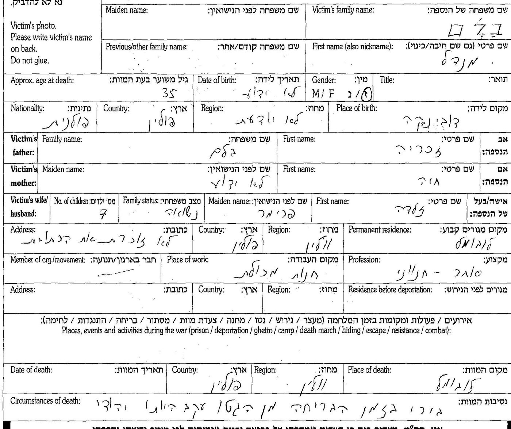
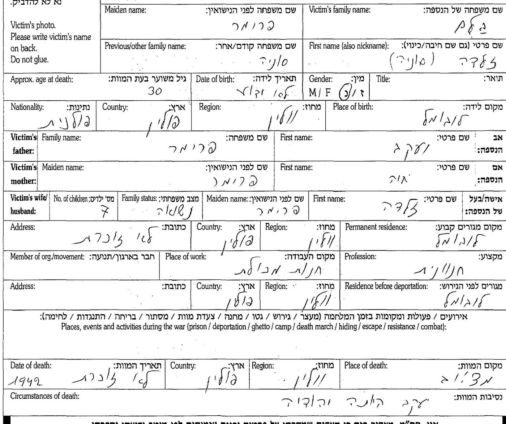
3.2 המקום שבו נרצחו
שני תיאורים בכתב ידה של צפורה, שאינם אותו תיאור:
- בדף הראשון על אביה: "נורו בזמן הבריחה מן הגטו", ומקום המוות — לובומל.
- בדף השני על אביה: "הגרמנים אספו את האם עם הילדים הקטנים והרגו אותם ע"י העיירה מצ'יוב"; מקום המוות — "האם + האחים — [ב]מצ'יוב". אותה מילה — כמקום מותה של זלדה, וכמקום המגורים של משה לפני הגירוש; בדף של משה, מקום המוות "כפר בשם צ'מיקוס".
"העיירה מצ'יוב" היא ככל הנראה מאצ'יוב (Maciejów), עיירה כ-25 ק"מ דרומית-מזרחית ללובומל — ככל הנראה, כקריאה. "צ'מיקוס" — טעון אימות. המשמעות האפשרית — שהאם והילדים נרצחו ליד מאצ'יוב, והאב נורה בבריחה מגטו לובומל — היא צירוף של שני דפים שאינם מתיישבים לגמרי זה עם זה; טעון אימות.
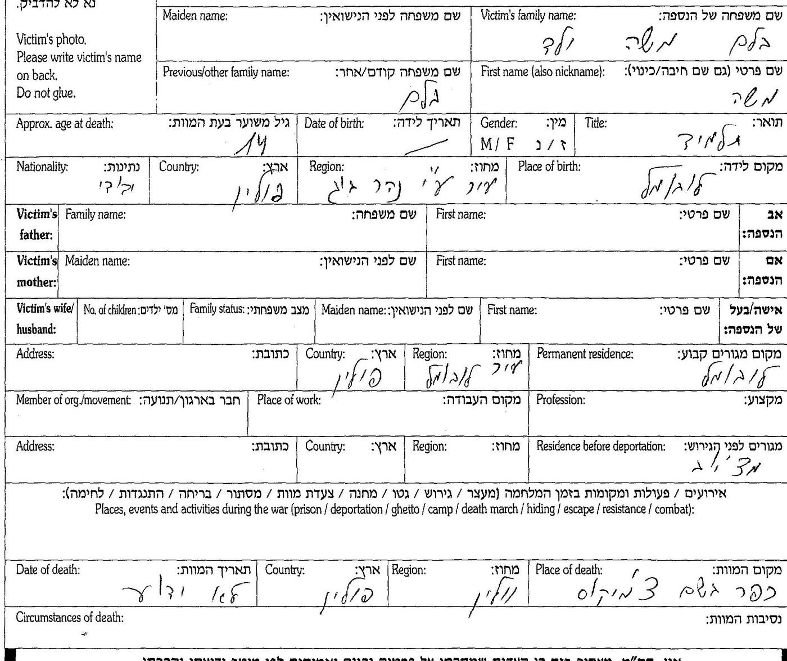
3.3 משפחת פרימר — דפים נוספים
שלושה דפי עד נוספים על יעקב וחיה פרימר ועל פרידה שלוקר לבית פרימר מילא ב-14.4.1999 בן משפחה, שכתב על פרידה "בן" — כלומר בן דודה של צפורה.[2] בדף של פרידה: «SHLUKER · FRIDA · maiden PRIMER · 30 · LUBOMIL · father IACOV PRIMER · mother HAIA · 4 children · 1943 · LUBOMIL» — בת יעקב וחיה פרימר, ילידת לובומל, אם לארבעה, נספתה בלובומל ב-1943 — מאומת כעדות. שהיא אחותה של זלדה — כמעט ודאי: אותם הורים ואותה עיירה. "פרידה פרימר, 1913–1943" שבעץ היא היא. שם הממלא אינו מתפרסם כאן, ועירו הושחרה בעותקים — ככל הנראה אדם חי.
4. המלחמה
4.1 מה שצפורה סימנה
בתחתית טופס דף העד שורה: "בזמן המלחמה הייתי במחנה / בגטו / ביערות / במסתור / בזהות בדויה / במחתרת (הקף בעיגול)". בחמישה מהטפסים (מנדל, זלדה, זכריה, חיה בלם, יעקב פרימר) הקיפה צפורה "ביערות" ו"במסתור"; בדף של משה הקיפה "כן" בשאלה "הנני ניצול השואה".[1] העדות — מאומת כעדותה; פרטים — היכן, מתי, עם מי, כמה זמן — אינם בדפים.
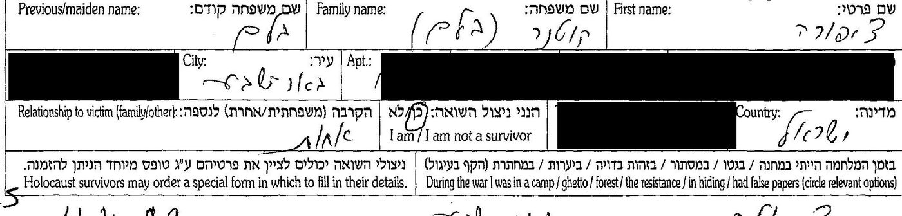
4.2 מה שכרטיס שירות האיתור מוסיף
על כרטיס הכרטסת המרכזית של שירות האיתור (5.2), בגוש נפרד בתחתיתו, נרשמה תולדה קצרה של המלחמה: «To 1943: Lublin · 1945: Ravensbrück c.c. · 1946: UNRRA, Austria» — "עד 1943: לובלין; 1945: מחנה הריכוז רוונסבריק; 1946: אונר"א, אוסטריה".[3] שלוש השורות אינן מתיישבות כולן עם עדותה:
- "עד 1943: לובלין" — לא בהכרח העיר: משפחת אביה ישבה בדוביינקה, שבמחוז לובלין, מעבר לבוג; ייתכן שהכוונה למחוז, ואז זה מתיישב עם יער ומסתור.
- "1946: אונר"א, אוסטריה" — מתיישב עם הדרך הרגילה של הבריחה, מאוסטריה לאיטליה, לפני סלווינו ביוני 1946.
- "1945: רוונסבריק" — אינו מתיישב עם "ביערות / במסתור", ואין לו הסבר.
ייתכן שהגוש הועתק ממסמך אחר או נרשם מפי אחר. טעון אימות — ואין להעדיף אותו על פני עדותה.
5. סלווינו, קפריסין, צאלים
5.1 סלווינו
Sciesopoli — בית ההבראה בסלווינו, בהרי ברגמו, ששימש מסוף 1945 בית ליתומים יהודים — מקיים אתר זיכרון ובו שתי רשימות:[6]
- "רשימה קצרה של ילדי סלווינו" (בעמוד הזה — הרשימה של שמונים הילדים הראשונים) — לפי האתר, תמלול רשימה השמורה ביד ושם, שנשלחה מהקהילה היהודית במילאנו לארגון OSE בז'נבה, ככל הנראה באוקטובר–נובמבר 1945: שמונים הילדים הראשונים בבית. מס' 1: «Balam · Zipora · Mandai · Salda · Lubomul · Polonia · 1931» — שם האב "מנדאי", שם האם "סלדה": מנדל וזלדה, בכתיב איטלקי.
- "רשימת ילדי סלווינו (בעבודה)" — מס' 36: «Balem (Balam) poi Kutner Zipora (1931 – Lubomjl, PL)» — "בלם (בלאם), לימים קוטנר"; ומס' 347: «Kutner Avraham (Abram) (1930 – PL)».
הדירוג: הרשימות — ככל הנראה (תמלול של אתר; הרשימה המקורית לא נקראה). שזו צפורה שלנו — כמעט ודאי: שמות שני ההורים, העיירה והשנה. באותו אתר, ברשימה אחרת שלפי האתר מבוססת על ספרו של אהרן מגד על בית סלווינו: אברהם קוטנר היה המזכיר הראשון של קיבוץ צאלים, ושם נשא את צפורה בלם, גם היא מילדי סלווינו — ככל הנראה (המחקר עליו).
5.2 כרטיס שירות האיתור — איטליה
בארכיון ארולסן, בכרטסת המרכזית של שירות האיתור — כרטיס שהוכן ב-7 במאי 1950, על פי רשימה של IRO איטליה:[3]
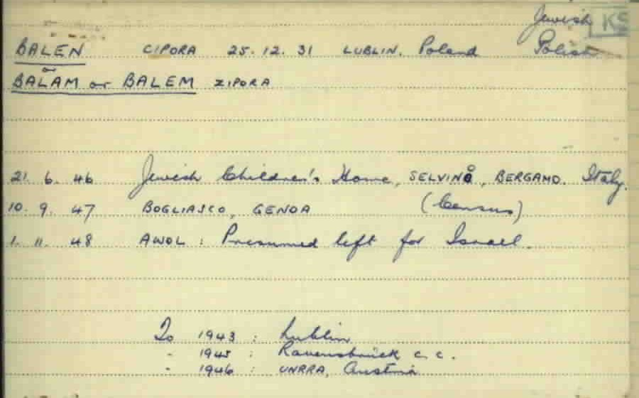
- הכרטיס — מאומת. שזו צפורה — כמעט ודאי: שלושת כתיבי שם המשפחה, יום הלידה 25.12 כבעץ, סלווינו ושנת הלידה כברשימת סלווינו.
- "Lublin" כמקום לידה — שיבוש של לובומל, או מחוז לובלין שבו שכנה דוביינקה (4.2); טעון אימות.
- השורות "10.9.47 בוליאסקו" ו"1.11.48 — יש להניח שעזבה לישראל" אינן מתיישבות עם קפריסין 1947 (5.3): ככל הנראה רישום שהועתק מרשימות קודמות ולא עודכן. טעון אימות.
5.3 רשימת קפריסין, 1947
ב-IGRA, מתוך תיק הארכיון הציוני המרכזי 56/4315 (עמ' 3275), רשימה של עצורי מחנות קפריסין שהועברו לארץ — לפי תיאור המאגר, "המכסה השנייה של ילדים יתומים", 1947:[4]
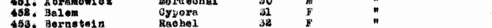

- השורה — מאומת כקריאה. שזו צפורה — כמעט ודאי: "Balem" הוא אחד משלושת הכתיבים שבכרטיס שירות האיתור; שנת הלידה 1931 כבכרטיס וברשימת סלווינו; היא רשומה עם ילדי סלווינו האחרים — ובהם אברם קוטנר; וב-IGRA אין "Balem" אחר במאגר קפריסין.
- "Ch. Arlozorof" — ככל הנראה אוניית המעפילים "חיים ארלוזורוב" (פרטי האונייה — במחקר על אברהם). מועד השחרור מקפריסין — לא נמצא (פרק 8). בעמוד אין כותרת או תאריך: "המכסה השנייה של ילדים יתומים" ו-1947 — מתיאור המאגר ב-IGRA.
5.4 צאלים, 1952
המועצה האזורית "חבל מעון", הנגב המערבי — "פנקס הבוחרים — קיבוץ צאלים", עמ' 19:[5]

- מאומת (ברשומה); שזו צפורה שלנו — כמעט ודאי. ב-1952 היא כבר קוטנר — כלומר נישאה לאברהם (או נרשמה כאשתו) לפני כן; מועד הנישואין — לא נמצא. לפי אתר סלווינו, נישאו בצאלים (5.1). השנה (1952) — מתיאור המאגר ב-IGRA, לא מהעמוד.
5.5 הקבורה, באר שבע
בבית העלמין הישן של באר שבע — מצבה משותפת לצפורה ולאברהם, שצילם מתנדב של BillionGraves ותעתק.[11] בתעתיק: צפורה קוטנר, נפטרה כ"ח בטבת תשס"ו — 28.1.2006 בתעתיק הלועזי — בת 73; הוריה מנדל בלם וזלדה-סוניה; ולצדם הוריו של אברהם, ישראל וציביה; והקדשה: «לזכר הוריהם ובני משפחתם שנספו בשואה».
- התעתיק — כמעט ודאי (התצלום המלא פתוח בתשלום בלבד); שזו מצבתה — מאומת לכל מעשה: השמות, ההורים, בעלה, באר שבע.
- כ"ח בטבת תשס"ו היה שבת, 28.1.2006, והחל עם כניסת השבת בערב 27.1 — מותה בליל שישי 27.1, כמו בעץ, נרשם בלוח העברי ככ"ח בטבת, והמתעתק המיר אותו ל-28.1 — ככל הנראה.
- הגיל, 73 בינואר 2006, מתאים ללידה ב-25.12.1932 (פרק 6).
6. שנת הלידה — 1931 או 1932
| המקור | שנה | יום וחודש |
|---|---|---|
| רשימת סלווינו, 1945 — בתמלול האתר (5.1) | 1931 | — |
| כרטיס שירות האיתור, 1950 (5.2) | 1931 | 25.12 |
| רשימת קפריסין, 1947 (5.3) | 1931 | — |
| פנקס צאלים, 1952 (5.4) | 1932 | — |
| עץ המשפחה (פרק 2) | 1932 | 25.12 |
| המצבה, באר שבע 2006 (5.5) | בת 73 ← 1932 | — |
יום הלידה, 25 בדצמבר, זהה בשני המקורות שמציינים אותו. השנה: שלושה מקורות מימי סלווינו וקפריסין — 1931; הרישום הישראלי, המשפחה והמצבה ("בת 73" בינואר 2006) — 1932. ההכרעה — טעון אימות; תעודת הזהות תכריע (פרק 8). ייתכן שהשנה שונתה בעלייה, כפי שקרה לבעלה (המחקר עליו) — אבל לבעלה הגיל הוקטן, וכאן השנה הישראלית מאוחרת דווקא.
7. עץ המשפחה
העץ מוצג בתרשים במקטע העץ. בטקסט — כל השמות מדפי העד שמילאה צפורה (3.1):
- זכריה בלם (כ-60, חייט) וחיה (כ-55) — דוביינקה; נרצחו שם. "2 ילדים" — מנדל, ועוד אחד שאינו ידוע.
- יעקב פרימר (כ-65, סוחר) וחיה (כ-65) — לובומל.
- מנדל בלם (כ-35), יליד דוביינקה, סוחר-חנווני בלובומל; זלדה (סוניה) לבית פרימר (כ-30), ילידת לובומל. שבעה ילדים:
- צפורה — 25.12.1931 (1932 בישראל ועל המצבה), לובומל — 27.1.2006, באר שבע.
- משה (כ-1928), רייזל (כ-1935), שמואל (כ-1937), אשר (כ-1938), ישראל (כ-1939), חיים (כ-1941) — נרצחו, ככל הנראה ב-1942.
- פרידה שלוקר לבית פרימר (כ-1913–1943), אם לארבעה — אחותה של זלדה, כמעט ודאי (3.3).
- בעלה: אברהם קוטנר — 15.8.1928, אוזורקוב — 3.1986 — מחקר נפרד.
8. פעולות פתוחות
| # | פעולה | מה זה ישנה | מי |
|---|---|---|---|
| 1 | המצבה נמצאה (5.5); חסרים תצלום מצבה משלנו ותעודת פטירה או זהות | שנת הלידה (1931 או 1932) כפי שנרשמה בישראל | משפחה / חברה קדישא באר שבע |
| 2 | שנות המלחמה — יער ומסתור, ואיך הגיעה לאיטליה | עדות מוקלטת או כתובה (יד ושם, ארכיון השואה של USC, בית לוחמי הגטאות); מה ידוע במשפחה | משפחה / ארכיונים |
| 3 | הרשימה המקורית של סלווינו (OSE, 1945) ותיק הילדה | הנוסח המקורי — ואולי תאריך כניסה, מקור הגעה ומלווה | יד ושם / OSE |
| 4 | מאצ'יוב וצ'מיקוס — שני התיאורים של מות המשפחה | מקום הרצח ותאריכו; רצח יהודי מאצ'יוב ולובומל, סתיו 1942 | קורא כתב יד; מאגר המקומות של יד ושם; ספרות על לובומל |
| 5 | אחיו או אחותו של מנדל ("2 ילדים" בדף של זכריה); ילדיה של פרידה | ענף נוסף במשפחה | יד ושם; משפחה |
| 6 | "חיים ארלוזורוב" — מועד ההפלגה והשחרור מקפריסין | שנת העלייה המדויקת | ספרות ההעפלה; הארכיון הציוני (S6) |
| 7 | ספר יזכור לובומל — עמודי משפחת בלם ופרימר | מה שכתבו בני העיירה; ייתכן אזכור שלה | קריאה ידנית של הספר (ה-OCR הזמין אינו שמיש) |
| 8 | תצלומים — צפורה בסלווינו, בצאלים | משפחה |
9. שיטה ומגבלות
9.1 בסיס הראיות
שלושה-עשר דפי עד שמילאה צפורה עצמה ב-1999 (עדות בכתב ידה — מקור ראשוני מאוחר, נקרא בסריקה); כרטיס הכרטסת המרכזית של שירות האיתור בארולסן (מקור ראשוני בן-זמנו, נקרא); רשימת עצורי קפריסין ופנקס הבוחרים של 1952 (סריקות IGRA שנקראו); רשימות ילדי סלווינו (תמלול של אתר — משני). עץ MyHeritage של המשפחה הוא נקודת המוצא בלבד.
9.2 סולם הוודאות
מאומת — נקרא ישירות מהמסמך; כמעט ודאי — מסמכים מתכנסים ללא סתירה; ככל הנראה — פרשנות סבירה או זיהוי נסיבתי; טעון אימות — לא פוענח או לא נבדק. המסמך מדורג בנפרד מן הזיהוי שנשען עליו: דף עד הוא מאומת כעדות, ומה שבו — זיכרונה של ילדה בת עשר, שנכתב חמישים ושבע שנים אחר כך.
9.3 מוסכמות הכתיב
בלם · Blam · Balem · Balam · Balen — אותו שם; לא Blum. צפורה · ציפורה · Cipora · Zipora · Cypora. פרימר · Primer · Frimer. לובומל · Luboml · Lubomel · Lubomjl · Lubomul. דוביינקה · Dubienka. קוטנר · Kutner · Kotner.
9.4 ממצאים שליליים
| # | שאלה | מקור וכיסוי | תוצאה | דירוג |
|---|---|---|---|---|
| N-1 | "Blum" בלובומל ביד ושם | Blum / Blum* / בלום + Luboml / לובומל | אפס — האיות ביד ושם הוא Blam | לא שלילה — שגיאת כתיב |
| N-2 | צפורה בלם בג'וינט | JDC Names: Blam / Blum / Blumen / Blyum + Luboml — אפס; Balam / Balem / Balen / Blam ללא מקום — 103 רשומות, אף אחת אינה צפורה ילידת 1930–1932 | אין | ככל הנראה |
| N-3 | "צפורה בלם" ברשימות העולים | Pinpoint: Balam Cipora, Balem Cypora — אפס; "צפורה בלם" — 67 מסמכים, רעש OCR של כתב יד, לא נבדקו | לא הוכרע | — |
| N-4 | קבורה | JewishGen JOWBR ישראל: Kutner Tzipora — אפס; IGRA קבורות, קוטנר — אפס | אין | אינו שלילה — כיסוי חלקי |
| N-5 | בלם / פרימר / שלוקר בספר יזכור לובומל (1974) | ארכיון האינטרנט, nybc313869, חיפוש בטקסט | אפס בכל המונחים | אינו שלילה — ה-OCR מפוצל ואינו שמיש |
| N-6 | "BLUM Cipora", רשימת לינץ | ארולסן 81656097 — ילידת רומניה, בת 18, הגירה לקנדה 1948 | אדם אחר | נשלל |
| N-7 | "צפורה קוטנר", ירושלים | IGRA, פנקס הבוחרים לכנסת 1949 — ילידת 1908 | אדם אחר | נשלל |
9.5 חסמים
FamilySearch — אין אסימון גישה; לא נבדק. BillionGraves — נבדק בדפדפן ונמצא (5.5); JewishGen JOWBR — דורש התחברות לחשבון. ארכיון המדינה והספרייה הלאומית — לא נבדקו בסבב הזה. JPress — שאילתה אחת ("צפורה קוטנר"), אפס; כתיבים אחרים ומודעות אבל מ-2006 — לא נבדקו (עיתוני 2006 אינם ב-JPress ממילא).
9.6 מה הדף אינו עושה
אינו מפרסם את שמות ילדיה של צפורה או פרטים על צאצאיה החיים. כתובת המגורים ומספר הטלפון שכתבה צפורה בדפי העד הושחרו בעותקים שבאתר. אינו מסתמך על עץ MyHeritage כראיה. אינו משלים את שנות המלחמה מתוך ספרות כללית על לובומל: מה שלא נמצא במסמך, נאמר שלא נמצא.
עץ המשפחה
הסדר מימין לשמאל — הבכור מימין. כל השמות והגילים — מדפי העד שמילאה צפורה ב-1999; הגילים משוערים ("גיל בעת המוות"), ושנות הלידה של הילדים נגזרות מהם. שנת המוות 1942 כתובה רק בדף של זלדה. פרידה — מדף עד שמילא בנה.
גלילה אופקית בתוך המסגרת מציגה את העץ במלואו, וכפתורי ההגדלה שמעליה מגדילים את הכתב; בהדפסה הוא מקבל עמוד לרוחב משלו.
פתיחת העץ בעמוד נפרד ↗מסמכי מפתח
המסמכים שעליהם נשען עיקר הדוח, בסדר שבו הם נדונים בו. לחיצה פותחת את הסריקה המלאה.
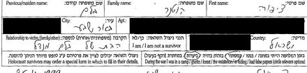
דף העד של מנדל בלם, 1999 — "הבת של מנדל בלם", צ. קוטנר, שם קודם בלם; מוקפים "ביערות" ו"במסתור"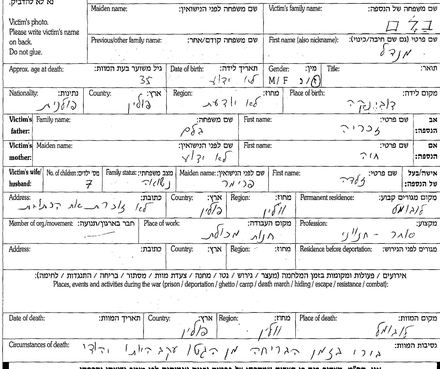
מנדל בלם — יליד דוביינקה, בן זכריה וחיה; אשתו זלדה לבית פרימר; שבעה ילדים; חנות מכולת בלובומל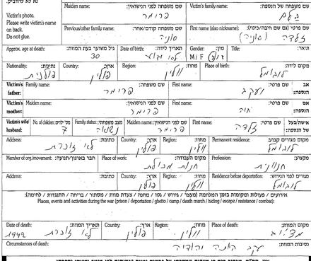
זלדה (סוניה) בלם לבית פרימר — בת יעקב וחיה, לובומל; 1942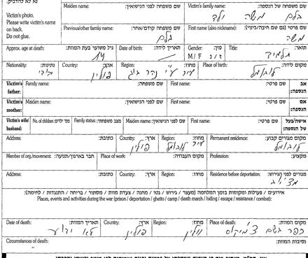
משה בלם, בן 14, תלמיד — אחיה הבכור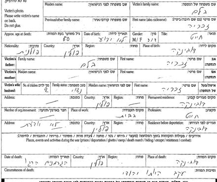
זכריה בלם, כבן 60, חייט — נולד, גר ונרצח בדוביינקהכרטיס שירות האיתור (על פי רשימת IRO איטליה) — בלן / בלאם / בלם צפורה, 25.12.31; סלווינו 21.6.46רשימת קפריסין, 1947 — 452 Balem Cypora 1931, ו-467 Kutner Abram 1930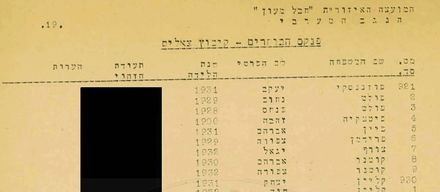
פנקס הבוחרים של קיבוץ צאלים, 1952 — קוטנר אברהם 1930, קוטנר צפורה 1932אינדקס האנשים
בני המשפחה המרכזיים בדוח, עם קישור אל הפרק שבו כל אחד נדון; העץ מציג את כולם. שדה החיפוש שבראש העמוד מחפש גם בכתיבים החלופיים של השמות.
אינדקס המקורות
רשימת מקורות
לכל ערך: מהות המקור ומעמדו, ההפניה החיצונית למסמך המקורי, העותק המקומי השמור בתיקיית המחקר, ומה בדיוק הוא מוכיח. "עותק מקומי" פירושו עותק של המסמך עצמו. כל המקורות נצפו באוקטובר 2026. בדפי העד שבאתר הושחרו כתובות המגורים ומספרי הטלפון של הממלאים. ערך 7 (עץ משפחה מקוון, שמור כתמליל) ערך 8 (ספר מוגן) וערך 11 (תעתיק מצבה) חריגים מכלל העותק המקומי, ומסומנים במקומם.
מקורות ראשוניים
1. יד ושם — שלושה-עשר דפי עד שמילאה צפורה קוטנר (בלם), באר שבע, 11.4.1999 ו-25.4.1999 (מאומת)
- מהות: טפסי דף עד של יד ושם, בכתב יד, על הוריה, ששת אחיה וארבעת סביה. במאגר: שם המשפחה Blam, הממלאת "Tzipora Blam Kutner".
- מקור חיצוני: מנדל בלם — 975385, 6544552 · זלדה בלם — 976303 · משה — 6406843 · רייזל — 960928 · שמואל — 883376 · אשר — 960255 · ישראל — 960922 · חיים — 962173 · זכריה בלם — 5627800 · חיה בלם — 5627799 · יעקב פרימר — 976309 · חיה פרימר — 956871
- עותק מקומי (הכתובת ומספר הטלפון הושחרו): מנדל · מנדל, דף שני · זלדה · משה · רייזל · שמואל · אשר · ישראל · חיים · זכריה · חיה בלם · יעקב פרימר · חיה פרימר · מפתח הרשומות · חיתוכים: מנדל, הממלאת — מנדל, זלדה, משה, הממלאת — משה, זכריה
- מה הוא מוכיח: הוריה מנדל (יליד דוביינקה) וזלדה לבית פרימר, חנוונים בלובומל, שבעה ילדים; ששת אחיה וגילם; סביה זכריה וחיה בלם מדוביינקה ויעקב וחיה פרימר מלובומל; ושהיא עצמה הייתה "ביערות" ו"במסתור" — מאומת כעדותה (3.1, 4.1).
2. יד ושם — שלושה דפי עד על משפחת פרימר, מאת בן משפחה, 14.4.1999 (מאומת כעדות)
- מקור חיצוני: יעקב פרימר — 5594221 · חיה פרימר — 5594222 · פרידה שלוקר לבית פרימר — 1126285
- עותק מקומי: יעקב · חיה · פרידה
- מה הוא מוכיח: פרידה שלוקר לבית פרימר, בת יעקב וחיה, ילידת לובומל, אם לארבעה, נספתה בלובומל ב-1943 — מאומת כעדות; שהיא אחות של זלדה — כמעט ודאי (3.3). שם הממלא ועירו אינם מתפרסמים.
3. ארכיון ארולסן — הכרטסת המרכזית של שירות האיתור (3.1.1.1), כרטיס "BALEN Cipora, 25.12.31", על פי רשימת IRO איטליה 9/E/575; הוכן 7.5.1950 (מאומת)
- מקור חיצוני: מסמך 66485493
- עותק מקומי: חזית · גב · פרטי הציטוט · חיתוך
- מה הוא מוכיח: צפורה בלן / בלאם / בלם, 25.12.1931, בבית הילדים בסלווינו ב-21.6.1946, בבוליאסקו ב-10.9.1947 — מאומת; הזיהוי — כמעט ודאי; הגוש "לובלין 1943 · רוונסבריק 1945 · אונר"א אוסטריה 1946" — טעון אימות (5.2, 4.2).
4. הארכיון הציוני המרכזי 56/4315, עמ' 3275 — רשימת עצורי מחנות קפריסין שהועברו לארץ, "המכסה השנייה של ילדים יתומים", 1947 (דרך IGRA; התיאור והשנה — מתיאור המאגר, לא מהעמוד) (מאומת; הזיהוי — כמעט ודאי)
- מקור חיצוני: IGRA-DententionCampsCyprus-3617 — Cypora Balem · IGRA-DententionCampsCyprus-3632 — Abram Kutner
- עותק מקומי: העמוד · מפתח הרשומות · חיתוכים: שורה 452, שורות 445–468
- מה הוא מוכיח: «452. Balem Cypora 31 F», אונייה "Ch. Arlozorof"; ובאותו עמוד «467. Kutner Abram 30 M» (5.3).
5. ארכיון המדינה — פנקס הבוחרים לבחירות המקומיות 1952, המועצה האזורית "חבל מעון", קיבוץ צאלים, עמ' 19 (דרך IGRA; השנה — מתיאור המאגר) (מאומת)
- מקור חיצוני: IGRA-1952-Voters-LocalElec-WestNegev-930
- עותק מקומי: העמוד · חיתוך
- מה הוא מוכיח: «929 קוטנר צפורה 1932», אחרי «928 קוטנר אברהם 1930» — מאומת; הזיהוי — כמעט ודאי (5.4).
מקורות משניים ומשפחתיים
6. Sciesopoli — אתר הזיכרון של בית הילדים בסלווינו: "רשימה קצרה של ילדי סלווינו" (לפי האתר — תמלול רשימה מ-1945 השמורה ביד ושם) ו"רשימת ילדי סלווינו (בעבודה)" (משני — ככל הנראה)
- מקור חיצוני: הרשימה הקצרה · רשימת ילדי סלווינו
- עותק מקומי: הרשימה הקצרה — טקסט העמוד · הרשימה המלאה — טקסט העמוד
- מה הוא מוכיח: "Balam Zipora", הורים "Mandai" ו-"Salda", "Lubomul", 1931 — מס' 1 בשמונים הילדים הראשונים בבית; "Balem (Balam) poi Kutner Zipora" — ככל הנראה; הזיהוי — כמעט ודאי (5.1).
7. עץ משפחתי ב-MyHeritage, נקרא 20.10.2026 (נקודת מוצא — לא ראיה)
- מקור חיצוני: עץ פרטי — הקישור אינו מתפרסם.
- עותק מקומי: תמליל הפרטים שנקראו — חריג: העץ אינו מסמך; פרטי החיים אינם מועתקים.
- מה הוא מוכיח: מה שהמשפחה יודעת ורשמה (פרק 2).
8. ספר יזכור לובומל (תל אביב, 1974) — ארכיון האינטרנט, nybc313869 (נבדק בטקסט; ה-OCR אינו שמיש)
- מקור חיצוני: הספר בארכיון האינטרנט
- עותק מקומי: אין — חריג: ספר מוגן בזכויות יוצרים; נקרא בארכיון האינטרנט ולא הועתק לאתר.
- מה הוא מוכיח: דבר עדיין — החיפוש בטקסט החזיר אפס, ואין להסיק מכך היעדר (9.4, N-5).
11. BillionGraves — שתי רשומות מצבה, בית העלמין הישן של באר שבע: צפורה קוטנר (21279102) ואברהם קוטנר (21279103) (תעתיק — כמעט ודאי)
- מהות: תצלום מצבה של מתנדב (BillionGraves GPS Verified Headstones) ותעתיק שלו; התצלום המלא פתוח בתשלום בלבד.
- מקור חיצוני: צפורה קוטנר · אברהם קוטנר
- עותק מקומי: תמליל שדות שתי הרשומות — חריג: התצלום אינו נגיש להורדה.
- מה הוא מוכיח: פטירה כ"ח בטבת תשס"ו, גיל 73; ההורים מנדל בלם וזלדה-סוניה; מצבה משותפת עם אברהם — כמעט ודאי (5.5).
נבדקו ונשללו
9. ארכיון ארולסן — "BLUM Cipora", רשימת לינץ (נשלל)
- מקור חיצוני: מסמך 81656097
- עותק מקומי: חזית · גב
- מה הוא מוכיח: ילידת רומניה, בת 18, היגרה לקנדה ב-1948 — אדם אחר.
10. IGRA — פנקס הבוחרים לכנסת 1949, ירושלים: "צפורה קוטנר", ילידת 1908 (נשלל)
- מקור חיצוני: IGRA-1949-National-Elections-314532
- מה הוא מוכיח: אישה אחרת, מבוגרת ממנה בעשרים וארבע שנים. אין עותק מקומי — רשומת אינדקס של מי שנשללה.
יומן המהדורות
כל המהדורות (2) — מה השתנה בכל אחת
מהדורה 1 · 20.10.2026
- דף ראשון. נקודת המוצא: עץ המשפחה ב-MyHeritage. נסרקו יד ושם, ארולסן, IGRA, ג'וינט, Pinpoint, JewishGen, ארכיון האינטרנט ו-JPress.
- נמצא שביד ושם שם המשפחה הוא Blam, לא Blum — ובחיפוש לפי הממלאת נמצאו שלושה-עשר דפי עד שמילאה צפורה עצמה ב-1999 על הוריה, ששת אחיה וארבעת סביה; בהם סימנה "ביערות" ו"במסתור". חדש לעומת העץ: אביה מנדל וסביה מדוביינקה; הוריה חנוונים.
- נמצאו ונקראו: כרטיס שירות האיתור (על פי רשימת IRO איטליה) (25.12.1931; סלווינו 21.6.1946); רשימת עצורי קפריסין 1947 ("Balem Cypora", 1931 — באותו עמוד עם "Kutner Abram"); פנקס הבוחרים של צאלים 1952. מאתר הזיכרון של בית סלווינו — מס' 1 ברשימת שמונים הילדים הראשונים, עם שמות הוריה.
- בעותקים שבאתר הושחרו הכתובות ומספרי הטלפון שבדפי העד; המקור הלא-מושחר נשמר מחוץ לאתר.
מהדורה 2 · 20.10.2026
- תיקונים בעקבות סבב ביקורת חיצונית ראשון. נקרא הדף השני על מנדל (6544552) — תיאור שני של מות המשפחה: "אספו את האם עם הילדים הקטנים והרגו אותם ע"י העיירה מצ'יוב" (ככל הנראה מאצ'יוב); שני התיאורים מוצגים זה לצד זה. תוקן: "מצ'יוב" אינו בשדה המגורים של זלדה (שם — לובומל) אלא במקום מותה. תומללו שדות הנסיבות ("עקב היותם יהודים").
- שנת המוות 1942 כתובה רק בדף של זלדה — הדירוג לשאר בני המשפחה ירד ל"כמעט ודאי"; הוסר "1942–1944" שלא נשען על מסמך.
- הכרטיס מארולסן אינו כרטיס IRO אלא כרטיס הכרטסת המרכזית של שירות האיתור, על פי רשימת IRO איטליה; ניתוח הגוש "לובלין · רוונסבריק · אונר"א" נכתב מחדש — לובלין ייתכן שהוא מחוז לובלין (דוביינקה), אונר"א אוסטריה מתיישב עם הדרך לאיטליה; רוונסבריק — בלי הסבר.
- נקרא דף העד של פרידה שלוקר לבית פרימר — בת יעקב וחיה; עלתה ל"כמעט ודאי" כאחות של זלדה. שם הממלא (ככל הנראה חי) הוסר, ועירו הושחרה בסריקות. מדף זכריה: "2 ילדים" — אח או אחות של מנדל שאינם ידועים.
- פרטיות: שם העץ המקוון וכתובתו הוסרו; נוספו דפוסי פרטיות לבנייה. סלווינו וקפריסין מסויגים גם בפתיחה ובעמוד הסיפור.